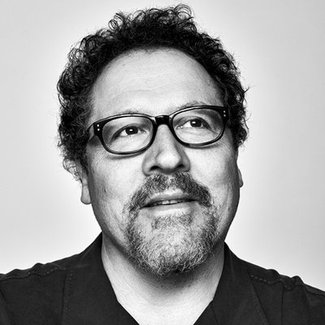

Jon Favreau ,The Man Behind The FoodTruck.
Jonathan Favreau born October 19, 1966 is an American actor, director, producer, and screenwriter.
Favreau has starred in the films Rudy (1993), Swingers (1996, which he also wrote), Very Bad Things (1998), The Replacements (2000), Daredevil (2003), The Break-Up (2006), Couples Retreat (2009), and Chef (2014), which he also wrote and directed. He portrayed Pete Becker on the television sitcom Friends.
He is further known for directing the films Elf (2003), Zathura: A Space Adventure (2005), Cowboys & Aliens (2011), The Jungle Book (2016) and The Lion King (2019).
Favreau has been a presence in the Marvel Cinematic Universe, directing, executive producing, and starring as Happy Hogan in the films Iron Man (2008) and Iron Man 2 (2010), as well as serving as an executive producer and/or appearing as Happy Hogan in The Avengers (2012), Iron Man 3 (2013), Avengers: Age of Ultron (2015), Spider-Man: Homecoming (2017), Avengers: Infinity War (2018), Avengers: Endgame (2019), and Spider-Man: Far From Home (2019).
He is the creator and one of the executive producers of the Star Wars television series The Mandalorian for Disney+, which premiered on November 12, 2019. He produces films under his production company banner, Fairview Entertainment.